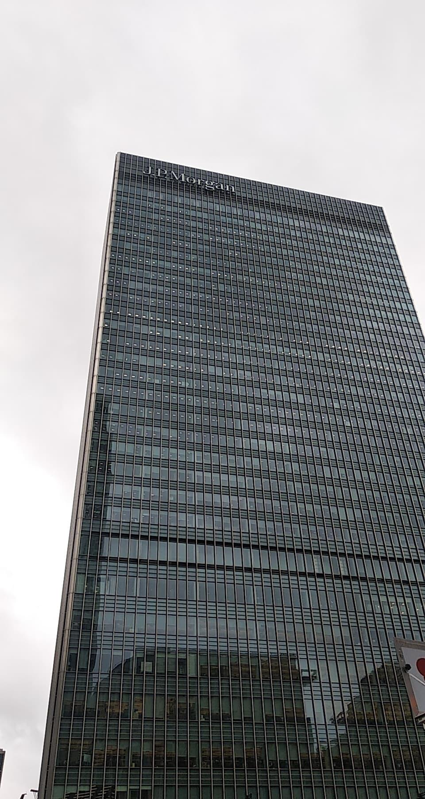

J.P.Morgan Code For Good
My First Hackathon

My First Hackathon
On the 1st of November 2019 I was flown to London by J.P.Morgan to take part in a 24Hour Code For Good Hackathon. Unknowingly at the time, I was going to be placed in a team of all Trinity College Students and we were going to be working together for the next day. We were tasked with designing a solution to a problem for a Nonprofit Organisation. The Nonprofit Organisations that were present were Autistica, Clic Sergent, Project Access and Movement to Work. Together as a team, we concluded that our skillset will best suit the problem that Autistica had outlined. Autistica helps autistic people to live a happier and healthier life. They were looking to create a website where the users data was going to be visualised in an autistic-friendly way. After hearing more details, it was time to begin coding.
Throughout the 24Hours we had 2 different mentors who looked after us, helped us with our project and showed us around JPMorgan. We began with brainstorming and jotting down ideas. We knew we were going to face multiple challenges throughout the 18 hours of coding. None of us had any prior exerience with React or Node, and had little Bootstrap Experience. However, we were determined to have a working MVP at the end of the 18 hours.
In those 24Hours I learned that: